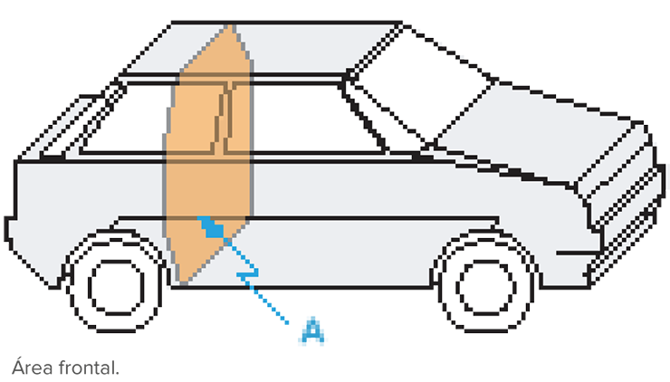

Fotografia de um trem em meio à paisagem da Colúmbia Britânica, Canadá.
Tomas Kulaja/Shutterstock.com
A consciência só é possível através de mudanças; mudança só é possível através de movimento.
Ribot apud Aldous Huxley. The art of seeing. Londres: Chatto & Windus, 1974. (Trad. livre).
Neste capítulo, vamos iniciar os estudos dos movimentos uniformes. Para isso, imagine a seguinte situação: você está em um shopping center e precisa ir a uma loja localizada no andar superior. Então, você se posiciona no degrau de uma escada rolante que se move em relação ao edifício.
Logo, percebe que não é necessário segurar no corrimão, pois você se desloca sempre no mesmo ritmo, com mudanças de posição em relação ao prédio, mas sem alteração em sua rapidez. Essa é a principal característica dos movimentos uniformes.
Existem inúmeros outros exemplos possíveis de analisar, como uma longa viagem de trem ou de avião, os quais se deslocam uniformemente por determinados intervalos de tempo; o movimento dos ponteiros do relógio em relação ao mostrador; ou, ainda, uma viagem rodoviária, na qual o motorista percebe o velocímetro do carro indicando sempre o mesmo valor.
- Como poderíamos determinar o comprimento de um trem que está atravessando uma ponte, utilizando um cronômetro?
- Estamos a, aproximadamente, 500 segundos-luz do Sol. Considerando a velocidade da luz constante e igual a 3 • 108 m/s, qual a sua estimativa para nossa distância até o Sol, em metros?
- Os escoteiros têm uma regra prática para estimar a distância em que ocorreu um relâmpago, que é cronometrar quanto tempo depois de ver o raio ouve-se o som. Eles tomam esse tempo e o dividem por 3, para obter a distância em km. Que velocidade essa regra supõe para o som em movimento uniforme?

Neste capítulo será abordada a habilidade EM13CNT101.
Definição e exemplo
Um movimento é dito uniforme se a sua velocidade escalar for constante e não nula. Em termos simbólicos, escrevemos:
MU (movimento uniforme) ⇔ v = constante ≠ 0
Como no MU a velocidade é a mesma em qualquer instante, então a velocidade média coincide com a velocidade instantânea, o que simplifica bastante a descrição desse movimento.
Considere um atleta amador correndo a 3 m/s (equivalente a 10,8 km/h) em uma esteira de uma academia. No instante t0 = 0, alguém dispara o cronômetro e passa a registrar eletronicamente o percurso do atleta (em relação à esteira) em uma tabela, que apresentamos a seguir.
| Corrida na esteira |
| Instante [t (s)] |
0 |
1 |
2 |
3 |
4 |
5 |
6 |
| Espaço [s (m)] |
4 |
7 |
10 |
13 |
16 |
19 |
22 |
Experimente calcular a velocidade média em alguns intervalos.
Vejamos, por exemplo, no intervalo entre t1 = 2 s e t2 = 5 s. Como  , temos
, temos  .
.
Agora, vamos acompanhar a construção de uma tabela em uma planilha eletrônica, usando os recursos desse tipo de aplicativo. Veja a figura ao lado. Na primeira linha, digitamos os títulos de cada coluna e, na segunda, colocamos os valores iniciais.
Para obtermos os valores subsequentes do tempo, devemos observar que cada instante equivale ao anterior acrescido de uma unidade.
Primeiramente, vamos lembrar que, como  , obtemos:
, obtemos:  .
.
Isto é, no MU, os deslocamentos são proporcionais aos intervalos de tempo.
Detalhando a expressão  , temos
, temos  .
.
Se considerarmos t0 = 0, obtemos:
s = s0 + v • t (função horária do movimento uniforme)
No exemplo do movimento descrito na planilha, temos:

Experimente conferir, para vários valores de t, os correspondentes espaços.
Gráficos da função horária no MU
As informações de um movimento podem ser traduzidas por meio de tabelas, de funções algébricas ou, ainda, de gráficos. Este último, por sua vez, facilita a visualização global do movimento. Nos gráficos, podemos focalizar um instante sem perder de vista o que aconteceu antes e depois dele. Como a função horária é uma função afim, o gráfico de s X t é uma reta.
Considerando os possíveis valores de v e s0, temos as seguintes possibilidades:
| Tipos de MU |
| Sentido do movimento |
Espaço inicial |
| A favor da trajetória |
v > 0 |
Além da origem |
s0 > 0 |
| Contra a trajetória |
v < 0 |
Aquém da origem |
s0 < 0 |
|
Na origem |
s0 = 0 |
Com a intenção de abordar todas as possibilidades de gráficos do MU, vamos observar duas variantes para o sentido do movimento e três para o espaço inicial. Assim, as seis combinações possíveis para s(t) são apresentadas nos gráficos a seguir, além das duas possibilidades de v(t).
| Gráficos do MU |
|
A favor da trajetória (progressivo) |
Contra a trajetória (retrógrado) |
| v(t) |
 |
 |
| s0 > 0 |
 |
 |
| s0 < 0 |
 |
 |
| s0 > 0 |
 |
 |
Propriedades dos gráficos do MU
Como os gráficos nos fornecem uma visão global do movimento, a partir deles podemos obter várias informações. Vejamos algumas delas a seguir.
Propriedade do gráfico s X t no MU
Consideremos o gráfico s X t de um MU apresentado a seguir.
1
Em uma estrada, observa-se um caminhão e um jipe, ambos correndo no mesmo sentido. Suas velocidades são, respectivamente, v1 = 54 km/h e v2 = 72 km/h, invariáveis. No início, o jipe está atrasado 100 m em relação ao caminhão. Responda:
Em uma estrada, observa-se um caminhão e um jipe, ambos correndo no mesmo sentido. Suas velocidades são, respectivamente, v1 = 54 km/h e v2 = 72 km/h, invariáveis. No início, o jipe está atrasado 100 m em relação ao caminhão. Responda:
- Em que instante o jipe alcança o caminhão?
- A partir do instante inicial, qual a distância percorrida pelo jipe até ultrapassar o caminhão? E qual a distância percorrida pelo caminhão até este ser ultrapassado pelo jipe?
Resolução

-
Considerando t0 = 0 s, transformando as velocidades para m/s e observando as condições iniciais, temos:
Para o caminhão:

Para o jipe:
No encontro, os espaços são iguais, logo:

-
Δs = v •
Δt = v • t
No caso do jipe: Δs2 = 20 • 20 = 400 m.
No caso do caminhão: Δs1 = 15 • 20 = 300 m.
Movimento de um objeto extenso
Uma situação semelhante ao encontro de móveis é a que envolve, por exemplo, um longo trem passando por uma ponte. Nesse caso, as dimensões do trem não são desprezíveis. Como a Cinemática que estudamos se aplica a pontos materiais, basta escolhermos um ponto do trem para fazermos a análise da questão. Na figura, o ponto escolhido foi o limpa-trilhos (ponto mais avante) do trem.

Trem atravessando uma ponte em três momentos.
O deslocamento sofrido por um ponto qualquer do trem para que se efetue a passagem completa é dado pela soma entre o comprimento da ponte e o comprimento do trem:  .
.
2
Um trem TA, de 100 m de comprimento, desloca-se com velocidade constante de 30 m/s. Quanto tempo esse trem leva para ultrapassar outro trem, TB, de 150 m de comprimento, considerando que este se desloca em um trilho paralelo, no mesmo sentido, com velocidade constante de 25 m/s?
Resolução
Primeiramente, devemos responder à seguinte pergunta: “Quando começa a ultrapassagem?”.
Veja a figura que ilustra esse instante:
Como cada ponto dos trens tem um espaço diferente nesse instante, devemos escolher um ponto do TA e um do TB para efetuar a resolução do problema. A solução independe dos pontos escolhidos, por isso, optamos pelos mais convenientes.

Trens no instante em que se inicia a ultrapassagem.
De acordo com a experiência geral, se os trens se movimentam no mesmo sentido ou em sentidos contrários, recomenda-se que sejam escolhidos os dois pontos mais distantes entre si ao visualizá-los como um conjunto. Tais pontos foram nomeados de A e B na figura apresentada.Com a origem escolhida, obtemos: s0,A = 0 e s0,B = 250 m. Montamos a seguir as funções horárias para os pontos A e B (e não para os trens), lembrando que em movimento uniforme  . Logo, temos:
. Logo, temos:

Finalmente, vamos responder à pergunta: “Quando termina a ultrapassagem?”. A seguinte figura ilustra essa situação final, em que temos  .
.
Portanto:


Trens no instante em que termina a ultrapassagem.
3
Em uma estrada de pista única, um carro de 4,0 m de comprimento, com velocidade de 22 m/s, quer ultrapassar um caminhão longo de 32,0 m, que está com velocidade constante de 36 km/h. O motorista do carro inicia a ultrapassagem quando a frente do caminhão está a 50 metros de um estreito túnel. Quanto tempo ele levará para realizar a ultrapassagem do caminhão?
- 0,2 s.
- 2,0 s.
- 4,0 s.
- 3,0 s.
- 1,0 s.
Resolução
Alternativa: D
A figura ilustra os instantes em que começa e em que termina a ultrapassagem.
As funções horárias, no SI, são dadas por

Representação simples dos instantes inicial e final da ultrapassagem de um carro (1) em relação a um caminhão (2).

Com os pontos escolhidos, no instante em que a ultrapassagem termina, temos:

Observe que 3 s é menor que o tempo que o caminhão leva para chegar ao túnel (5 s).
Portanto, a resposta correta é a alternativa d.

Aplicando conhecimentos
1
Fatec-SP A tabela fornece, em vários instantes, a posição s de um automóvel em relação ao km zero da estrada em que se movimenta.
A função horária que nos fornece a posição do automóvel, com as unidades fornecidas, é:
| t (h) |
0,0 |
2,0 |
4,0 |
6,0 |
8,0 |
10,0 |
| s (km) |
200 |
170 |
140 |
110 |
80 |
50 |
- s = 200 + 30t
- s = 200 - 30t
- s = 200 + 15t
- s = 200 - 15t
- s = 200 - 15t2
2
Analise o gráfico a seguir, que se refere a um movimento uniforme.

Agora, responda às questões::
- Qual é o espaço inicial do móvel?
- Qual é a velocidade escalar?
- Qual é a função horária do movimento?
- É possível dizer se a trajetória é retilínea apenas observando o gráfico?
- O movimento é progressivo ou retrógrado?
3
O diagrama cartesiano seguinte refere-se a um movimento uniforme.

- O movimento é a favor ou contra a orientação da trajetória?
- Qual é o espaço inicial do móvel?
- Qual é a função horária desse movimento?
- Em que instante o móvel passa pela origem dos espaços?
4
O gráfico a seguir representa o movimento dos veículos A e B, deslocando-se sobre uma mesma trajetória. Determine:

- a velocidade escalar de cada um dos móveis.
- o espaço inicial de cada um.
- as funções horárias de A e B.
- o instante do encontro.
- o espaço do encontro.
5
UFPE Um terremoto normalmente dá origem a dois tipos de ondas, s e p, que se propagam pelo solo com velocidades distintas. No gráfico a seguir está representada a variação no tempo da distância percorrida por cada uma das ondas a partir do epicentro do terremoto. Com quantos minutos de diferença essas ondas atingirão uma cidade situada a 1 500 km de distância do ponto 0?

- 5
- 4
- 3
- 2
- 1
6
Fatec-SP O gráfico a seguir representa a velocidade de dois móveis A e B que se movem sobre o mesmo referencial. No instante t = 0 os dois ocupam a mesma posição nesse referencial.

A respeito dessa situação podemos afirmar que
- os dois móveis se encontram no instante t = 0,6 h.
- entre os instantes t = 0 e t = 0,2 h os dois móveis terão percorrido a mesma distância.
- entre os instantes 0,8 h e 1,0 h o móvel B moveu-se em sentido oposto ao referencial.
- o móvel B esteve parado entre os instantes0,2 h e 0,8 h.
- entre 0,2 h e 0,8 h o móvel B estará se deslocando em movimento uniforme.
7
Cefet-MG Duas esferas A e B movem-se ao longo de uma linha reta, com velocidades constantes e iguais a 4 cm/s e 2 cm/s, respectivamente. A figura mostra suas posições num dado instante.

A posição, em cm, em que A alcança B é:
- 4.
- 8.
- 11.
- 12.
8
UFJF/Pism 2020 Uma viagem de ônibus entre Juiz de Fora e o Rio de Janeiro normalmente é realizada com velocidade média de 60 km/h e tem duração de 3 horas, entre suas respectivas rodoviárias. Uma estudante fez esta viagem de ônibus, e relatou que, após 2 horas do início da viagem, devido a obras na pista, o ônibus ficou parado por 30 minutos. Depois disso, a pista foi liberada e o ônibus seguiu sua viagem, mas, devido ao engarrafamento na entrada da cidade do Rio de Janeiro até a rodoviária, a estudante demorou mais horas. Qual foi a velocidade média do ônibus na viagem relatada pela estudante?
- 60 km/h
- 72 km/h
- 45 km/h
- 40 km/h
- 36 km/h
9
UFPR Em uma caminhada por um parque, uma pessoa, após percorrer 1 km a partir de um ponto inicial de uma pista e mantendo uma velocidade constante de 5 km/h, cruza com outra pessoa que segue em sentido contrário e com velocidade constante de 4 km/h. A pista forma um trajeto fechado com percurso total de 3 km. Calcule quanto tempo levará para as duas pessoas se encontrarem na próxima vez.
10
EPCar Dois automóveis A e Bencontram-se estacionados paralelamente ao marco zero de uma estrada. Em um dado instante, o automóvel A parte, movimentando-se com velocidade escalar constante VA = 80 km/h. Depois de certo intervalo de tempo, Δt, o automóvel B parte no encalço de A com velocidade escalar constante VA = 100 km/h. Após 2 h de viagem, o motorista de A verifica que B se encontra 10 km atrás e conclui que o intervalo Δt, em que o motorista B ainda permaneceu estacionado, em horas, é igual a
- 0,25
- 0,50
- 1,00
- 4,00
11
UFPE Em um determinado instante t0 de uma competição de corrida, a distância relativa ao longo da circunferência da pista, entre dois atletas A e B, é 13 metros. Os atletas correm com velocidades diferentes, porém constantes e no mesmo sentido (anti-horário), em uma pista circular. Os dois passam lado a lado pela primeira vez no ponto C, diametralmente oposto à posição de B no instante t0, exatamente 20 segundos depois. Qual é a diferença de velocidade entre eles, medida em cm/s?

12
Unicamp-SP 2020 A volta da França é uma das maiores competições do ciclismo mundial. Num treino, um ciclista entra num circuito reto e horizontal (movimento em uma dimensão) com velocidade constante e positiva. No instante t1 ele acelera sua bicicleta com uma aceleração constante e positiva até o instante t2. Entre t2 e t3, ele varia sua velocidade com uma aceleração também constante, porém negativa. Ao final do percurso, a partir do instante t3, ele se mantém em movimento retilíneo uniforme. De acordo com essas informações, o gráfico que melhor descreve a velocidade do atleta em função do tempo é
Consolidando saberes
1
Unesp Uma bola desloca-se em trajetória retilínea, com velocidade constante, sobre um plano horizontal transparente. Com o sol a pino, a sombra da bola é projetada verticalmente sobre um plano inclinado, como mostra a figura a seguir.

Nessas condições, a sombra desloca-se sobre o plano inclinado em
- movimento retilíneo uniforme, com velocidade de módulo igual ao da velocidade da bola.
- movimento retilíneo uniforme, com velocidade de módulo menor que o da velocidade da bola.
- movimento retilíneo uniforme, com velocidade de módulo maior que o da velocidade da bola.
- movimento retilíneo uniformemente variado, com velocidade de módulo crescente.
- movimento retilíneo uniformemente variado, com velocidade de módulo decrescente.
2
Unesp Uma bola desloca-se em trajetória retilínea, com velocidade constante, sobre um plano horizontal transparente. Com o sol a pino, a sombra da bola é projetada verticalmente sobre um plano inclinado, como mostra a figura a seguir.
- estar uniformemente acelerada para a direita.
- deslocar-se a uma velocidade de 2 cm/S.
- estar com uma aceleração de 2 cm/s2 para a esquerda.
- descrever um movimento retilíneo uniformemente variado, com velocidade inicial de 50 cm/s.
- descrever um movimento retilíneo, com velocidade constante de 0,5 m/s.
3
UFSC Um móvel desloca-se ao longo de uma linha reta, sendo sua posição em função do tempo dada pelo gráfico a seguir. Marque as proposições CORRETAS.

Nessas condições, a sombra desloca-se sobre o plano inclinado em
- 01. Nos trechos BC e DE, o movimento foi acelerado.
- 02. No trecho CD, a velocidade foi constante diferente de ZERO.
- 04. De A até C, o corpo deslocou-se sempre no mesmo sentido.
- 08. De B a C, a aceleração foi constante diferente de ZERO.
- 16. No trecho DE, a velocidade foi negativa.
Soma:
4
UFRN A cidade de João Câmara, a 80 km de Natal, no Rio Grande do Norte (RN), tem sido o epicentro (ponto da superfície terrestre atingido em primeiro lugar, e com mais intensidade, pelas ondas sísmicas) de alguns terremotos ocorridos nesse estado. O departamento de Física da UFRN tem um grupo de pesquisadores que trabalham na área de sismologia utilizando um sismógrafo instalado nas suas dependências, para detecção de terremotos. Num terremoto, em geral, duas ondas, denominadas de primária (P) e secundária (S), percorrem o interior da Terra com velocidades diferentes.
Admita que as informações contidas no gráfico adiante são referentes a um dos terremotos ocorridos no RN. Considere ainda que a origem dos eixos da figura é coincidente com a posição da cidade de João Câmara.

Dados referentes às ondas P e S, associados a um terremoto ocorrido no Rio Grande do Norte.
Diante das informações contidas no gráfico, é correto afirmar que a onda mais rápida e a diferença de tempo de chegada das ondas P e S no sismógrafo da UFRN, em Natal, correspondem, respectivamente,
- a onda S e 4 segundos.
- a onda P e 8 segundos.
- a onda P e 16 segundos.
- a onda S e 24 segundos.
- n.d.a
5
ESPM Dois carros, A e B, de dimensões desprezíveis, movem-se em movimento uniforme e no mesmo sentido. No instante t0 = 0, os carros encontram-se nas posições indicadas na figura. Determine depois de quanto tempo A alcança B.

Fora de escala.
- 200 s
- 100 s
- 50 s
- 28,6 s
- 14,3 s
6
PUC-PR Dois motociclistas, A e B, percorrem uma pista retilínea com velocidades constantes VA = 15 m/s e VB = 10 m/s. No início da contagem dos tempos suas posições são XA = 20 m e XB = 300 m.

Fora de escala.
O tempo decorrido em que o motociclista A ultrapassa e fica a 100 m do motociclista B é:
- 56 s
- 86 s
- 76 s
- 36 s
- 66 s
7
Fuvest-SP João está parado em um posto de gasolina quando vê o carro de seu amigo, passando por um ponto P, na estrada, a 60 km/h. Pretendendo alcançá-lo, João parte com seu carro e passa pelo mesmo ponto P, depois de 4 minutos, já a 80 km/h. Considere que ambos dirigem com velocidades constantes. Medindo o tempo, a partir de sua passagem pelo ponto P, João deverá alcançar seu amigo, aproximadamente, em
- 4 minutos
- 10 minutos
- 12 minutos
- 15 minutos
- 20 minutos
TEXTO PARA A PRÓXIMA QUESTÃO:
O rio Tapajós nasce no estado de Mato Grosso, banha parte do estado do Pará e deságua no rio Amazonas, em frente à cidade de Santarém (PA). Seu nome tem origem indígena, apresenta extensão aproximada de 1 800 km, dos quais apenas 280 km são navegáveis, apresentando fluxo médio de 13 500 m3/s, e velocidade média de 0,4 m/s. Em frente a Santarém, ocorre o encontro das águas do rio Tapajós com o rio Amazonas. Esse fenômeno tornou-se atração turística, pois a água lodosa do segundo rio não se mistura com a do primeiro, que é menos densa.
7
G1 - Cotil 2020 Um indígena, em sua canoa (caiaque, na língua tupi-guarani), pretende fazer um ritmo constante de 1 remada por segundo, deslocando-se por 1,2 km neste rio. Considere que sua remada consiste num movimento de 80 cm de distância entre os pontos de entrada e saída do remo na água.
A diferença entre o tempo de subida e de descida do rio, no trecho acima citado, é:
- 1 000 s
- 2 000 s
- 3 000 s
- 4 000 s
8
UFC-CE Duas pessoas pegam simultaneamente escadas rolantes, paralelas, de mesmo comprimento ℓ, em uma loja, sendo que uma delas desce e a outra sobe. A escada que desce tem velocida-de VA = 1 m/s e a que sobe VB. Considere o tempo de descida da escada igual a 12 s. Sabendo-se que as pessoas se cruzam a 1/3 do caminho percorrido pela pessoa que sobe, determine:
- a velocidade VB da escada que sobe.
- o comprimento das escadas.
- a razão entre os tempos gastos na descida e na subida das pessoas.
9
Uerj Um piso plano é revestido de hexágonos regulares congruentes cujo lado mede 10 cm. Na ilustração de parte desse piso, T, M e F são vértices comuns a três hexágonos e representam os pontos nos quais se encontram, respectivamente, um torrão de açúcar, uma mosca e uma formiga.

Ao perceber o açúcar, os dois insetos partem no mesmo instante, com velocidades constantes, para alcançá-lo. Admita que a mosca leve 10 segundos para atingir o ponto T. Despreze o espaçamento entre os hexágonos e as dimensões dos animais. A menor velocidade, em centímetros por segundo, necessária para que a formiga chegue ao ponto T no mesmo instante que a mosca é igual a:
- 3,5
- 5,0
- 5,5
- 7,0
10
UEL-PR Um trem de 200 m de comprimento, com velocidade escalar constante de 60 km/h, gasta 36 s para atravessar completamente uma ponte. A extensão da ponte, em metros, é de:
- 200
- 400
- 500
- 600
- 800
11
UFMG Um pequeno bote, que navega a uma velocidade de 2,0 m/s em relação à margem de um rio, é alcançado por um navio, de 50 m de comprimento, que se move paralelamente a ele, no mesmo sentido, como mostrado nesta figura:

Esse navio demora 20 segundos para ultrapassar o bote. Ambos movem-se com velocidades constantes.
Nessas condições, a velocidade do navio em relação à margem do rio é de, aproximadamente,
- 0,50 m/s
- 2,0 m/s
- 2,5 m/s
- 4,5 m/s
12
UFV-MG O tempo necessário para um motorista, em um carro a 40 m/s, ultrapassar um trem de carga (no mesmo sentido do carro), de 0,18 km de comprimento, a 10 m/s, será, em segundos:
- 5,4
- 6,0 X 10-3
- 3,6
- 3,6 X 10-3
- 6,0
13
Udesc 2016 Um automóvel de passeio, em uma reta longa de uma rodovia, viaja em velocidade constante de 100 km/h e à sua frente, à distância de 1,00 km, está um caminhão que viaja em velocidade constante de 80 km/h. O automóvel tem de comprimento 4,50 m e o caminhão 30,0 m. A distância percorrida pelo carro até ultrapassar completamente o caminhão é, aproximadamente, igual a:
Esse navio demora 20 segundos para ultrapassar o bote. Ambos movem-se com velocidades constantes.
Nessas condições, a velocidade do navio em relação à margem do rio é de, aproximadamente,
- 517 m
- 20,7 km
- 515 m
- 5,15 km
- 5,17 km
14
UFRJ Dois trens, um de carga e outro de passageiros, movem-se nos mesmos trilhos retilíneos, em sentidos opostos, um aproximando-se do outro, ambos com movimentos uniformes. O trem de carga, de 50 m de comprimento, tem uma velocidade de módulo igual a 10 m/s e o de passageiros, uma velocidade de módulo igual a v. O trem de carga deve entrar num desvio para que o de passageiros possa prosseguir viagem nos mesmos trilhos, como ilustra a figura. No instante focalizado, as distâncias das dianteiras dos trens ao desvio valem 200 m e 400 m, respectivamente.

Calcule o valor máximo de v para que não haja colisão.
15
UEM-PR 2016 Para fazer ultrapassagens em estradas de pista simples é necessário trafegar pela contramão. Para uma manobra segura o condutor deve iniciar a ultrapassagem indo para a pista contrária quando a dianteira do seu veículo estiver a uma distância de 10 metros da traseira do veículo da frente e voltar para a pista quando a sua traseira estiver 5 metros à frente da dianteira do outro veículo. Considere um carro de 5 metros de comprimento, viajando a 108 km/h que deseja ultrapassar um caminhão de 30 metros de comprimento trafegando a 72 km/h. Sobre essa manobra, assinale o que for correto (Obs.: desconsidere os movimentos laterais do carro).
- 01. O tempo entre o início e o fim da manobra será de 5 segundos.
- 02. O carro irá percorrer 180 metros entre o início e o fim da manobra.
- 04. A distância, em metros, entre a dianteira do carro e a traseira do caminhão, t segundos após o início da manobra, é dada por

- 08. A distância, em metros, entre a traseira do carro e a dianteira do caminhão, t segundos após o início da manobra, é dada por

- 16. Se quiser ultrapassar o caminhão na metade do tempo que levaria nas condições citadas, o carro precisaria dobrar a sua velocidade.
Soma:
16
Udesc Durante um teste de treinamento da Marinha, um projétil é disparado de um canhão com velocidade constante de 275,0 m/s em direção ao centro de um navio. O navio move-se com velocidade constante de 12,0 m/s em direção perpendicular à trajetória do projétil. Se o impacto do projétil no navio ocorre a 21,6 m do seu centro, a distância (em metros) entre o canhão e o navio é:
- 516,6
- 673,4
- 495,0
- 322,2
- 245,0
17
UEL-PR Sentado em um banco, de frente para a praia, um estudante observa um pequeno barco de pesca que se move lentamente no mar. Entre o seu banco e a praia, existe uma fileira de palmeiras que, aparentemente, foram plantadas na mesma época e, portanto, possuem aproximadamente o mesmo diâmetro. O estudante percebe que, quando a vista do barco é encoberta pelo tronco de uma palmeira, seu comprimento aparente corresponde exatamente ao diâmetro da árvore. Ele resolve então medir, para cada árvore, o tempo transcorrido entre o instante em que o barco começa a ser encoberto até o instante em que ele fica completamente encoberto, e verifica que para todas as palmeiras ele é praticamente o mesmo, 4 s. A seguir, olhando ao seu redor, o estudante verifica que, ancorados num porto próximo à praia, estão outros barcos iguais ao que ele observa no mar e resolve medir seu comprimento, obtendo 10 m. Finalmente, medindo a distância entre o ponto de observação e as palmeiras, bem como o diâmetro das árvores, ele obtém, respectivamente, 16 m e 25 cm. A partir destes dados, ele pôde calcular a distância entre o barco e a sua posição de observação, bem como a velocidade com que o barco se deslocava no mar. Assinale a alternativa que apresenta, respectivamente, os resultados encontrados pelo estudante.
Calcule o valor máximo de v para que não haja colisão.
- 450 m e 2,1 m/s.
- 640 m e 2,5 m/s.
- 640 m e 8,0 m/s.
- 1 100 m e 2,5 m/s.
- 1 100 m e 7,0 m/s.
• Um engenheiro trabalha em um fábrica que se encontra um pouco afastada de determinada estação de trem. Sempre que o engenheiro chega à estação, chega também um carro para buscá-lo e levá-lo até a fábrica. Um dia o engenheiro chegou à estação 1 h antes do normal e foi andando até encontrar o carro no caminho, quando então nele embarcou. Nesse dia, o engenheiro chegou à fábrica 20 min mais cedo. Sabe-se que o carro parte da fábrica para pegar o engenheiro sempre no mesmo horário. Considerando que todos os movimentos são uniformes, quanto tempo o engenheiro andou a pé no dia em que chegou mais cedo à estação?


 .
.
 . Assim, concluímos:
. Assim, concluímos:


 e
e  .
.